| Prev | Next |
Polygon Triangulation
Problem definition: Let P be a polygon over a set of n points p1, p2, ..., pn in 2D plane. We say that P is a triangulated polygon if points are connected by line segments such that the interior space of the polygon are divided into non-intersecting triangular regions.
Given below is a polygon and its various triangulations. The last one is not a triangulation since the non-intersecting region property is violated.

Special case: Triangulating a convex polygon
A (simple) convex polygon can be triangulated in a straightforward manner by picking an arbitrary vertex and drawing line segments (or diagonals) from that vertex to every other vertex that are not its neighbors. This is possible because from any vertex all other vertices are visible through the interior of the polygon. Starting from a vertex one can traverse in a clockwise or counter-clockwise direction and draw the n-3 diagonals as the vertices are succesively visited. It is easy to infer that the algorithm takes linear time.
The first traingulation in the above figure is an example of this method.
Triangulating a simple (not necessarily convex) polygon
In computational geometry literature, there are several algorithms to triangulate a simple polygon. (i) O(n2) Fisk's Ear Clipping algorithm, (ii) O(nlogn) algorithm to decompose the simple polygon into monotone polygons and then triangulating them, (iii) O(n) Chazelle's algorithm. There are several other variations too. We will discuss the first two. The third one, although efficient, is too complex to implement.
Triangulation using Ear clipping method
Definition: Let P be a polygon in 2D space. Let v be a vertex in P and let v' and v" be its neighbors. We say v'-v-v" is an ear if the line segment v'-v" lies entirely in the interior of the polygon. In such a case, the vertex v is referred to as an ear tip.
Every simple polygon has at least two ears. By identifying the ears and repeatedly clipping them, a polygon can be triangulated.
Clipping an ear involves removing the vertex v along with its edges v'-v and v-v" from the polygon and adding a line segment v'-v" (also called as diagonal) to the polygon. Removing an ear reduces the polygon size by 1 since v is no more part of the polygon. By repeating this n-3 times, a simple polygon can be triangulated resulting in n-2 traingles.
Question: How do we identify an ear (or ear tip)?
In a convex polygon every vertex is an ear tip. So during each iteration, any of the remaining vertices can be randomly picked and the ear can be removed.
The working of the algorithm for an example is shown below. Vertices p1, p4, p7 and p3 were picked succesively to triangulate the polygon. Clearly several other choices are possible.
- 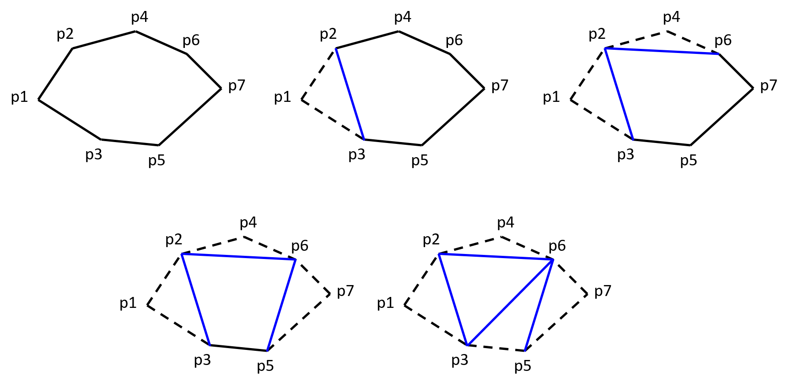
An important property of the convex polygon that allows this approach to work is: each vertex in a convex polygon is a hull vertex. When an ear is clipped from the polygon, the residual polygon remains convex.
For a simple polygon that is not convex this property does not hold. Non-hull vertices (called as reflex vertices) cannot be an ear tip. However, there is no guarantee that a hull vertex can be a ear tip either. Also, a reflex vertex can turn into a hull vertex. Consider the example given in the following figure.
- Vertex u cannot be an ear tip. It can be seen that segment u'-u" is not interior to the polygon. This is because the vertex u is not a hull vertex.
- Vertex v is a hull vertex and can be an ear tip. It can be seen that the segment v'-v" is completely interior to the polygon.
- Vertex w cannot be an ear tip inspite of it being a hull vertex because a part of the polygon is obstructing the path w'-w" and hence w'-w" does not lie completely inside the polygon.
- 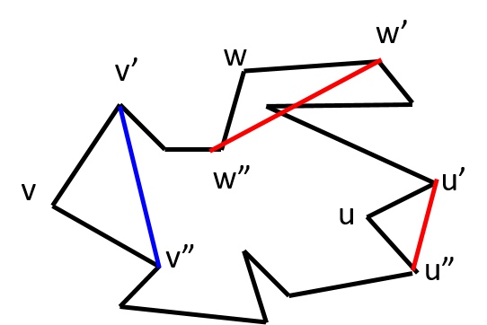
There are two more consequences due to the concavity in the polygon.
1. A hull vertex that satisfies the property of the ear tip, can lose that property as the algorithm progresses. For example, consider the polygon below.
- Initially, vertices v and v" satisfy the property of ear tip. i.e. the diagonals v'-v" and v-v** lie completely interior to the polygon.
- Let's say we chose vertex v as the ear tip during the first iteration and clipped v'-v-v".
- Now, vertex v" loses the property of the ear tip since v'-v** does not lie to the interior of the residual polygon.
- 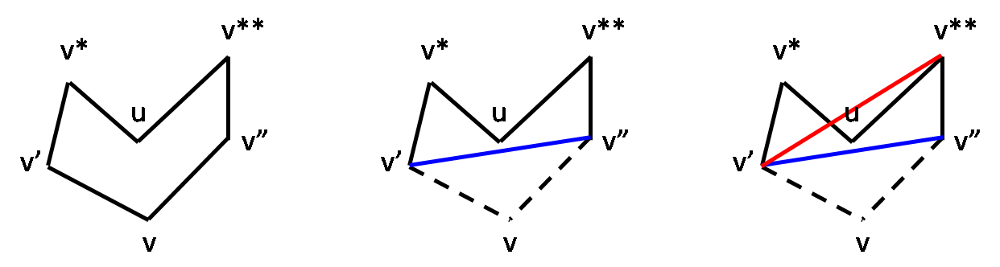
2. A reflex vertex can become a hull vertex and possibly gain the property of ear tip as the algorithm progresses. For example, see the two cases shown in the figure below.
- Initially, vertex u is a reflex vertex.
- Let's say we chose vertex v* as the ear tip and remove the ear v'-v*-u.
- In the first case shown at the left, vertex u not only becomes a hull vertex but also acquires the property of ear tip.
- In the second case shown at the right, vertex u becomes a hull vertex but not an ear tip.
| Reflex vertex u turns into convex vertex and also becomes ear tip |
Reflex vertex u turns into convex vertex but not an ear tip |
| 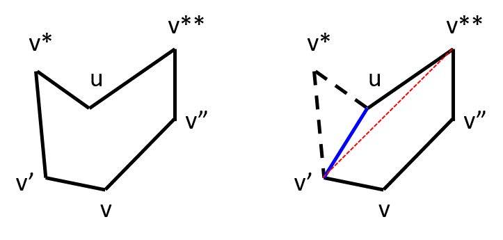 | 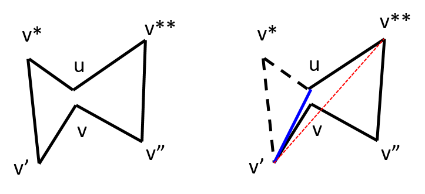 |
Let's summarize the points observered.
- Not all hull vertices qualify to be an ear tip.
- A hull vertex remains a hull vertex throughout.
- A hull vertex that qualify as an ear tip may not retain the property throughout.
- A reflex vertex can turn into a hull vertex and possibly acquire the property of ear tip.
Although the above examples do not give an approach to pick the ear tip, it gives some clue on the criteria that a vertex needs to satisfy to be chosen as an ear tip and how often we need to check the criteria.
To arrive at a general algorithm, let's define three sets of vertices.
- Set C: Tracks all convex hull vertices at any point of the algorithm.
- Set E: Subset of C that tracks vertices that have ear tip property.
- Set R: Tracks all reflex vertices as algorithm progresses.
The basic idea of the algorithm is given below.
Initialization: Firstly, all hull vertices can be computed in O(nlogn) time using Graham scan. This needs to be done once in the beginning since a hull vertex remains so throughout. Thus the convex set C can be determined. Secondly, to determine the reflex set R, all one needs to do is to compute V - C where V is the set of all vertices. Thirdly, to determine the Ear set E, one can take every vertex p in C, compute the ear (triangle) and then check if at least one of the reflex vertices lies within the ear. If so, add p to E. This takes O(n2) time.
Execution: After the above initialization step, n-3 iterations are done.
- Pick a vertex v from the E and clip the ear v'-v-v". This takes O(1) time.
- Remove v from E and C. This takes O(1) time.
- Check if v' and v" has turned into convex vertices. If so, add it/them to both C. It takes O(1) time.
- Further, if it/they satisfy the ear tip property, add it/them to E. This step takes O(n) time.
Hence, the iterative step takes (n-3)*O(n) = O(n2) time.
The question that remains is how too check if v' and v" has turned into convex vertices?
Let v* and v** be the new adjacent vertices of v' and v" repsectively after ear tip v is removed. If the interior angle / v*-v'-v" < π, then v' has turned into a convex vertex. Similarly, if the interior angle / v'-v"-v** < π, then v" has turned into a convex vertex.
The figures below show the step-by-step working of the algorithm for an example. The ear vertices picked successively during each iteration are as follows: 1, 17, 14, 12, 11, 9, 7, 6, 4, 3, 2, 15, 13. During each iteration, the sets C, E and R are revised.
| INITIALIZATION C = {1,3,4,6,7,9,11,12,14,17} E = {1,3,4,6,7,9,11,12,14,17} R = {2,5,8,10,13,15,16} |
ITERATION 1 C = { E = { R = {2,5,8,10,13,15,16} |
ITERATION 2 C = {3,4,6,7,9,11,12,14,16, E = {3,4,6,7,9,11,12,14,16, R = {2,5,8,10,13,15, |
| 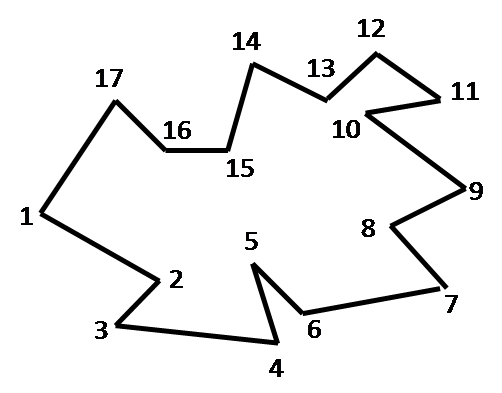 | 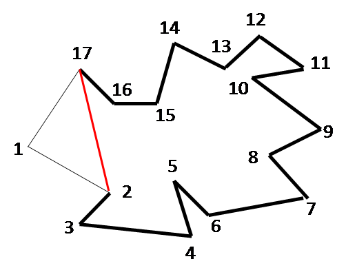 |  |
| ITERATION 3 C = {3,4,6,7,9,11,12,14, E = {3,4,6,7,9,11,12,14, R = {2,5,8,10,13,15} |
ITERATION 4 C = {3,4,6,7,9,11,12, E = {3,4,6,7,9,11,12, R = {2,5,8,10,13, |
ITERATION 5 C = {3,4,6,7,9,11, E = {3,4,6,7,9,11, R = {2,5,8,10, |
| 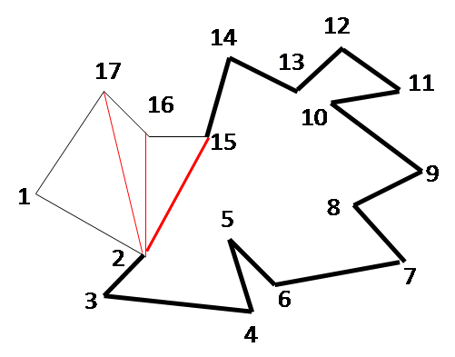 | 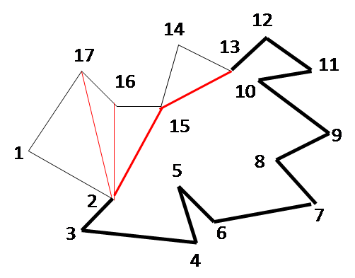 | 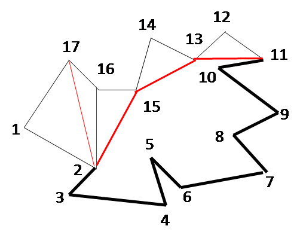 |
| ITERATION 6 C = {3,4,6,7,9,10, E = {3,4,6,7,9,10, R = {2,5,8, |
ITERATION 7 C = {3,4,6,7,8, E = {3,4,6,7,8, R = {2,5,8} |
ITERATION 8 C = {3,4,6, E = {3,4,6, R = {2,5, |
| 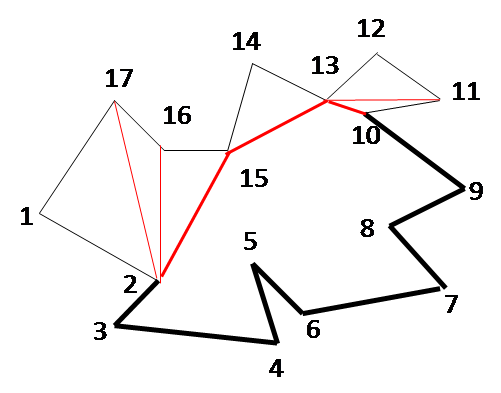 | 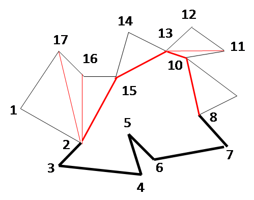 | 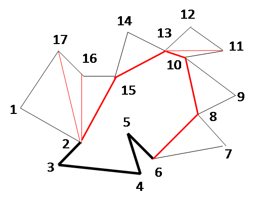 |
| ITERATION 9 C = {3,4, E = {3,4, R = {2,5} |
ITERATION 10 C = {3, E = {3, R = {2,5} |
ITERATION 11 C = {2, E = {2, R = { |
| 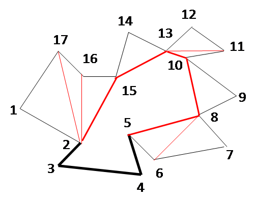 | 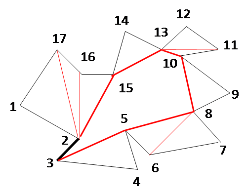 | 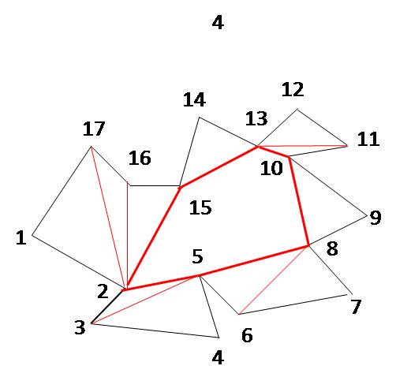 |
| ITERATION 12 C = { E = { R = {} |
ITERATION 13 C = {5,8,10,13, E = {5,8,10,13, R = {} |
ITERATION 14 C = {5,8,10, E = {5,8,10, R = {} |
| 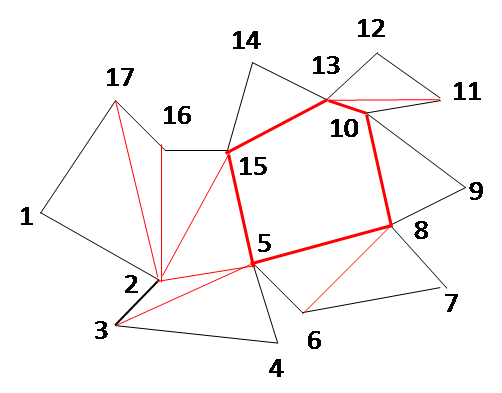 | 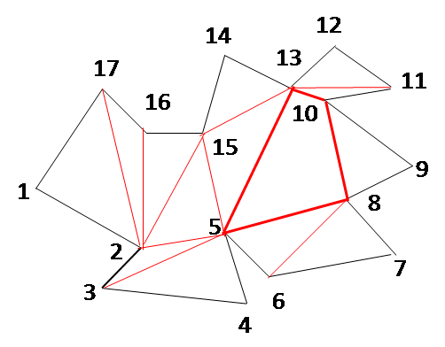 | 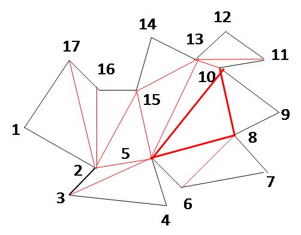 |
Algorithm: Ear-Clip-Triangulation
// Input: Vertices V = v[1..n] in counter-clockwise order
// Output: n-3 ears (or triangles)
C = ConvexHull(v[1], ..., v[n]) // O(nlogn)
R = V - C // O(n)
for each vertex v in C // O(n^2)
if v is an ear tip // i.e. no w ∈ R lies inside the ear
E = E ∪ {v}
for (i = 1; i ≤ n-3; i++) { // O(n^2)
Let v[i] be an ear tip and v[x] and v[y] be its neighbors
Remove v[i] from E and C
Let v[l] be the left neighbor of v[x]
Let v[r] be the right neighbor of v[y]
if ( ANGLE(v[l], v[x], v[y]) < 180 )
R = R - {v[x]}
C = C ∪ {v[x]}
if v[x] is an ear tip
E = E ∪ {v[x]}
if ( ANGLE(v[x], v[y], v[r]) < 180 )
R = R - {v[y]}
C = C ∪ {v[y]}
if v[y] is an ear tip
E = E ∪ {v[y]}
}
The overall complexity is O(nlogn) + O(n) + O(n2) + O(n2) = O(n2).
Triangulation using monotone polygons
There are two steps in this approach. Given a polygon P, the first phase is to divide it into monotone polygons. In the second phase, the monotone polygons are triangulated.
What is a monotone polygon?
A polygon P is called monotone with respect to a line L, if every line orthogonal to L intersects P at most twice.
Given below is a monotone polygon and the demonstration of above definition. The thick blue line denotes the straight line L and the light blue lines perpendicular to l denotes the orthogonal lines. L and its orthogonals are shown in three positions.
| 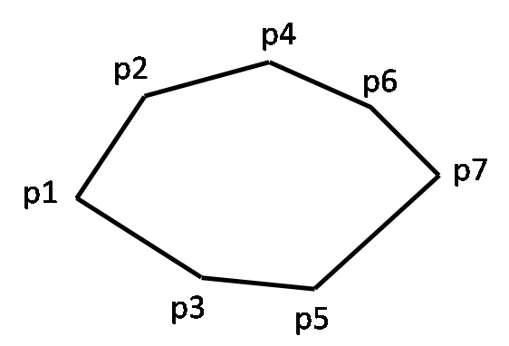 | 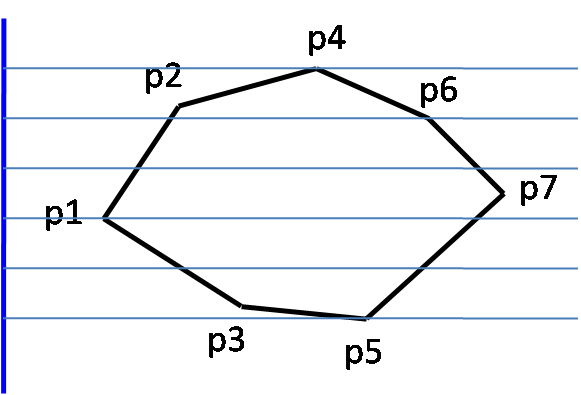 | 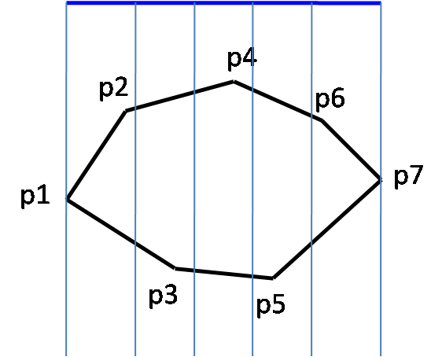 | 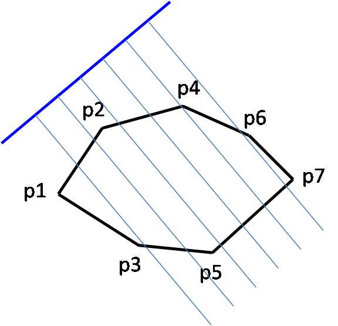 |
Note that if L is tilted in certain manner, the orthogonals may pass through the edge of the polygon, apparently breaking the definition of intersection at max two points. In such cases, we can tilt line L slightly so that it does not pass through any edge of the polygon.
In practical problems we will be interested in line L being either vertical or horizontal. Based on this, a polygon may be x-monotone, y-monotone or xy-monotone.
A more useful way to understand monotone polygon is as follows.
x-monotone polygon: Assume that from the leftmost point two ants travel along the upper and lower paths to the rightmost point. If the x value is always increasing (or non- decreasing) as the ants travel along their paths, then it is a x-monotone polygon.
y-monoton polygon: Assume that from the topmost point two ants travel along the left and right paths to the bottommost point. If the y-value is always decreasing (or non- increasing) as the ants travel along their paths, then it is a y-monotone polygon.
Given below are three polygons, the first one is both x- and y-monotone. The second one is x-monotone but not y-monotone and the third is y-monotone but not x-monotone.
| 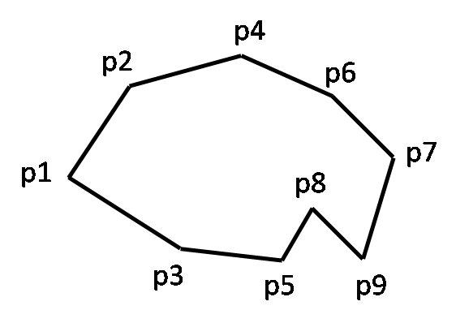 | 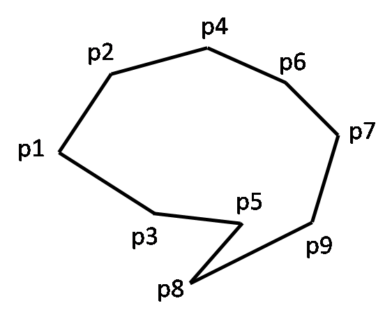 |
Step 1: Breaking a polygon into x-monotone pieces
In this approach, we will focus on breaking a polygon into x-monotone pieces. We will do different cases that can arise one at a time and then come out with the overall algorithm.
Case 1: Handling a split vertex
Consider the polygon below. We call the reflex vertex 4 as split vertex because when seen from left to right, two edges emerge from 4. And because of the presence of the split vertex, this is not a x-monotone polygon.
There are three ways to split the polygon into x-monotone pieces.
- Draw a diagonal from 6 to 4 yielding two x-monotone pieces: 6-4-5 and 1-2-3-4-6.
- Draw a diagonal from 2 to 4 yielding two x-monotone pieces: 1-2-4-5-6 and 2-3-4.
- Draw a diagonal from 1 to 4 yielding two x-monotone pieces: 1-2-3-4 and 1-4-5-6.
In the above three cases 6, 2 and 1 are called as opposite vertices respectively.
| 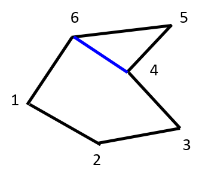 | 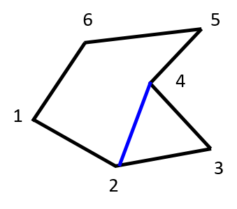 | 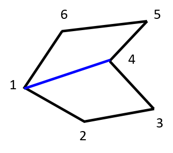 |
How do we arrive at a general method to determine the opposite vertex (for split vertex)?
We use a vertical sweepline L to determine the opposite vertex of the split vertex. We keep track of last seen vertex as L sweeps the polygon. The moment the L hits a split vertex, we connect it to the last seen vertex. This is demonstrated in the below example.
|
L hits vertex 1. Last seen vertex = null. 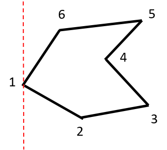 |
L hits vertex 6. Last seen vertex = 1. 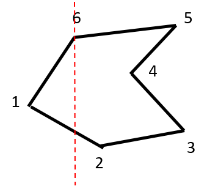 |
L hits vertex 2. Last seen vertex = 6. 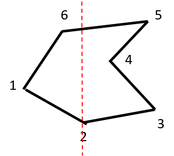 |
L hits vertex 4. Last seen vertex = 2. 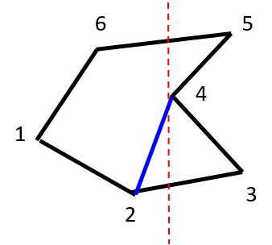 |
Note that the start vertex 1 is also a split vertex. However, since it is at the beginning we don't attempt to draw any diagonals. There can be more than one start vertices. See the figure below. Both 1 and 3 are start vertices.
- 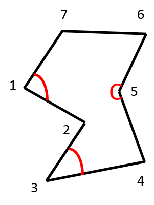
This brings us to the question: How do we differentiate between a start and split vertices?
The interior angle at the start vertex is < π while that of split vertex is > π.
It is easy to infer / 7-1-2 < π, / 2-3-4 < π, / 4-5-6 > π
Case 2: Handling a merge vertex
Consider the polygon below. We call the reflex vertex 1 as merge vertex because when seen from left to right, two edges merge into 1. And because of the presence of the merge vertex, this is not a x-monotone polygon.
There are three ways to split the polygon into x-monotone pieces.
- Draw a diagonal from 1 to 3 yielding two x-monotone pieces: 1-2-3 and 1-3-4-5-6.
- Draw a diagonal from 1 to 5 yielding two x-monotone pieces: 1-2-3-4-5 and 1-5-6.
- Draw a diagonal from 1 to 4 yielding two x-monotone pieces: 1-2-3-4 and 1-4-5-6.
In the above three cases 3, 5 and 4 are called as opposite vertices respectively.
| 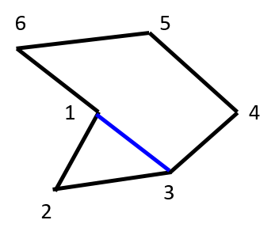 | 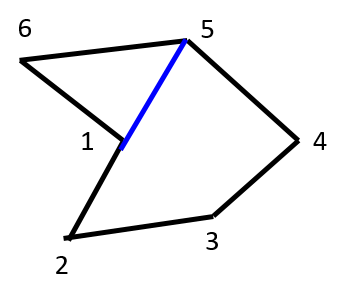 | 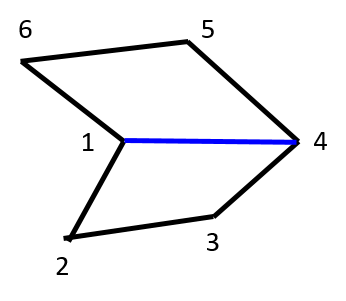 |
How do we arrive at a general method to determine the opposite vertex (for merge vertex)?
We use a vertical sweepline L to determine the opposite vertex of the merge vertex. As L sweeps the polygon once L hits a merge vertex, we look for the next vertex and connect it to the merge vertex. This is demonstrated in the below example.
|
L hits vertex 6. Next vertex = null. 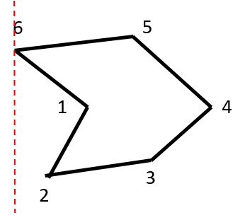 |
L hits vertex 2. Next vertex = null. 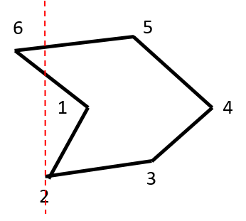 |
L hits vertex 1. Next vertex = null. 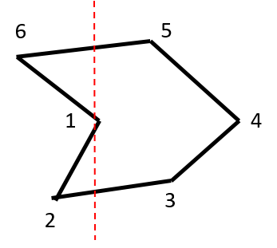 |
L hits vertex 5. Next vertex = 5. 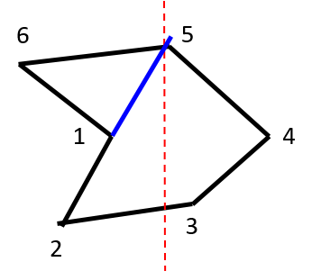 |
Note that the end vertex 4 is also a merge vertex. However, since it is at the end we don't attempt to draw any diagonals. There can be more than one end vertices. See the figure below. Both 4 and 6 are end vertices.
- 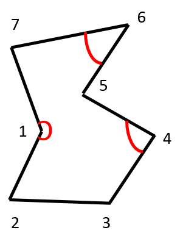
This brings us to the question: How do we differentiate between a merge and end vertices?
The interior angle at the end vertex is > π while that of merge vertex is < π.
It is easy to infer / 7-1-2 > π, / 3-4-5 < π, / 5-6-7 < π
Algorithm: Make-Monotone
// Input: Vertices V = v[1..n] sorted on x-coordinate
// Output: Monotone pieces
last_vertex = null
merge_vertex = null
for (i = 1; i <= n; i++)
current_vertex = v[i]
if merge_vertex ≠ null
Connect merge_vertex to v[i]
if v[i] is a regular vertex
last_vertex = v[i]
else if v[i] is a start vertex
last_vertex = v[i]
else if v[i] is a split vertex // Connect to last vertex
Connect last_vertex to v[i]
last_vertex = v[i]
else if v[i] is a merge vertex
merge_vertex = v[i] // Connect to v[i] in next iteration
last_vertex = v[i]
else if v[i] is an end vertex
// do nothing
Time complexity
The algorithm takes O(n) time as we do O(1) operation at each vertex. To determine if a split vertex is a start vertex, it takes O(1) time since we need to check the interior angle with either neighbors of v[i]. The same reasoning goes for determining if merge vertex is an end vertex. Connecting v[i] to either last_vertex or merge_vertex again takes O(1) time. If we count the sorting of the vertices on x-coordinate, the overall time complexity works out to O(nlogn).